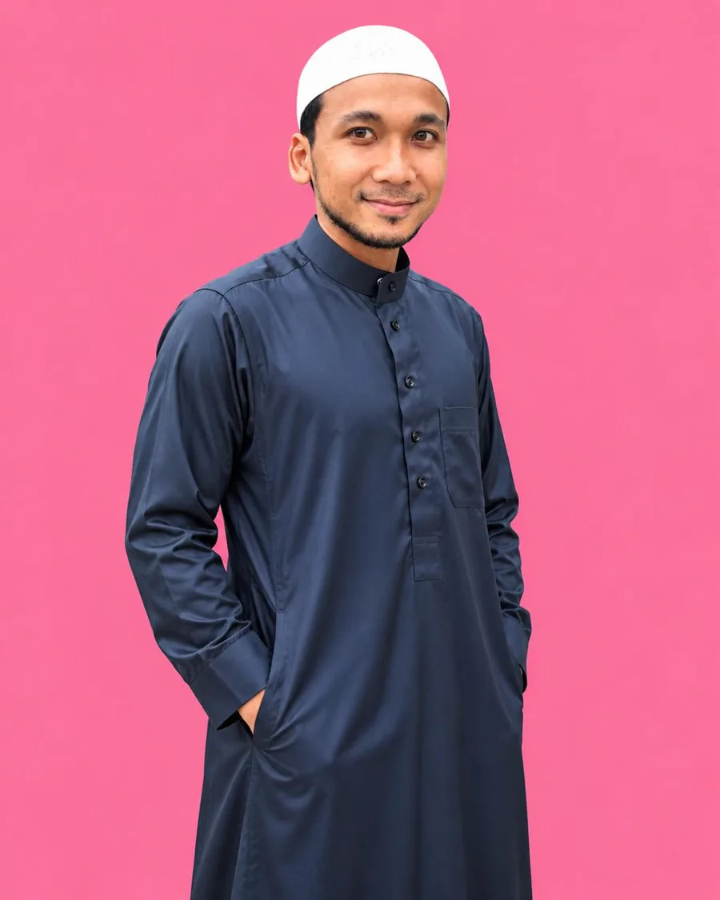
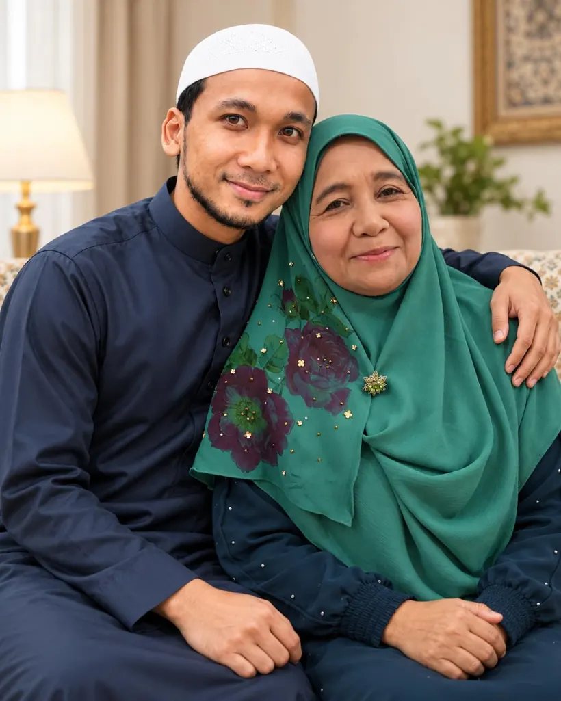
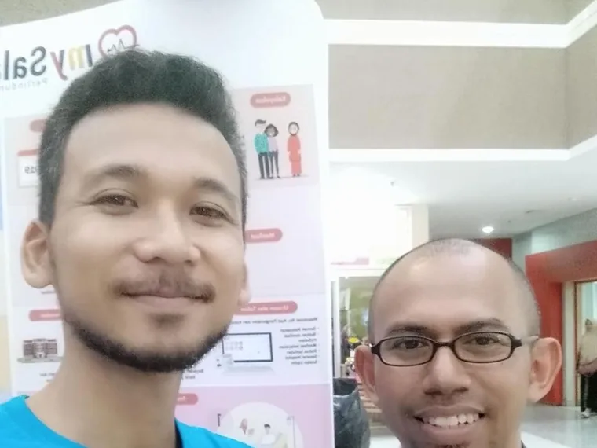

01
Belajar jadi ibu ayah
Faham apa yang nak jadi, sebelum hari tu tiba. Dari pilih nama sampai bersedia ke hospital.
Mula dengan ebookAssalamualaikum warahmatullah.
Awak nak bersedia. Tapi sekarang, terasa banyak sangat yang belum tahu. Saya ajar sedikit-sedikit, dari pengalaman sembilan tahun urus uri dan lebih 5,000 keluarga.

5,000+ keluarga·9 tahun Placento·86 ulasan Google 5 bintang·Al-Azhar·Al-Hafiz
Saya Basri. Sembilan tahun urus uri, lebih 5,000 keluarga. Tapi cerita ni mula di rumah, dengan emak saya.
Emak saya, Hajjah Rafeah, seorang bidan. Empat puluh tahun lebih dia sambut bayi, urus uri, sampai ke pagi. Saya besar dalam suasana itu. Lepas tu ke Al-Azhar, belajar pengajian Islam dan bahasa Arab.

Tapi ada satu peristiwa yang mengubah cara saya fikir. Anak pertama saya lahir dengan komplikasi jantung berlubang. Lapan bulan kami berkampung dalam wad. Dalam tempoh itu baru saya sedar: orang ramai datang sambut bayi, tapi jarang yang datang sambut ibu dan ayahnya.
Pilih yang paling dekat dengan keadaan awak sekarang. Tak perlu buka semua.
Faham apa yang nak jadi, sebelum hari tu tiba. Dari pilih nama sampai bersedia ke hospital.
Mula dengan ebookMadu dan pemakanan sunnah. Ilmu dulu, baru pilih. Bukan jual barang, tapi faham dulu apa keluarga awak perlukan.
Tanya pasal maduUntuk awak yang nak pendapatan sampingan sambil membawa produk kesihatan keluarga.
Kenal team

Ambil ebook percuma dulu. Kalau ada apa-apa nak tanya, saya balas sendiri.